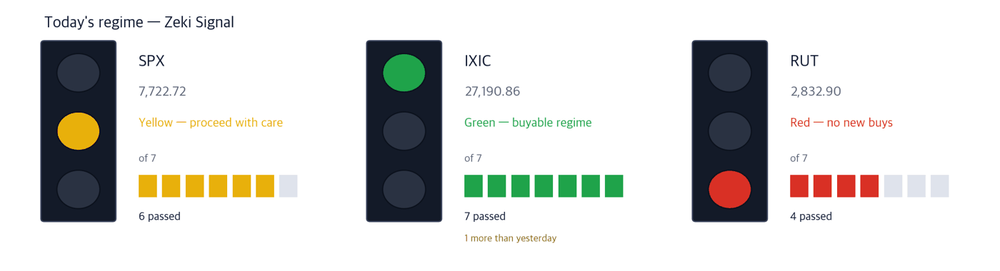

Dow 51,177 +0.49% | Nasdaq Comp. 27,191 +1.19% | S&P 500 7,723 +0.73% | Russell 2000 2,833 +0.94% | 10-yr Treasury 5.28% | Zeki Signal Yellow |

Green favours buying, yellow says wait, red says hold off. The cells count how many of seven conditions are met - more cells mean the advance is broader. This signal uses the October 2 close; there has been no trading since, so it has not changed. The Nasdaq Composite meets all seven conditions and is green, one more than on October 1. The S&P 500 meets six and is yellow; the Russell 2000 meets four and is red. The three indexes combined read yellow.
Wait — the stance the signal implies.
On October 2 the Nasdaq Composite rose 1.19% to 27,190.86, touching a record during the session. For the week the Nasdaq gained 0.45%, while the S&P 500 fell 0.3% and the Dow 1.3%. (IBD)
Rates matter more than the indexes. The 10-year yield rose nearly 0.10 point on the week to 5.28%, after touching 5.34% intraday on October 1, a 22-year high. (IBD)
The new story over the weekend is the Strait of Hormuz. Gulf crude exports were nearing prewar levels when attacks on ships picked up again. A U.S. official said Iran's targeting has improved. OPEC and its allies agreed to hold November output steady. (The Wall Street Journal)
① On Monday, watch first whether the 10-year yield tops its October 1 intraday high. That was a 22-year high. Sharply rising yields make a lasting stock rally hard, one analysis argued. On October 2, too, indexes fell from their highs as yields turned up. (IBD)
② Watch whether tanker rates and oil prices split after the Hormuz attacks. Crude-tanker owner DHT Holdings closed 0.2% below its one-year high. Yet crude futures fell 1% early Monday. Freight is pricing the risk; oil is not, yet. (IBD, The Wall Street Journal)
③ SpaceX rose 7.35% on Friday. It closed at $158.96, above the $158.13 entry line. Last week it flew its first successful paid Starship mission. But its 3-month Zeki Flow is C, short of the bar. (IBD)
One number - the 10-year yield, up nearly 0.10 point on the week. U.S. consumers keep spending through higher prices and are driving growth: they pay more, and they buy more. With spending this firm, yields are slow to come down. (The Wall Street Journal, IBD)
| Date | What to watch | What it changes |
|---|---|---|
| Mon Oct. 5, open | First session after the renewed Hormuz attacks | Shows whether tanker rates and oil move the same way |
| Tue Oct. 6, 8:30 ET | U.S. trade in goods and services (August) | Imports by country and product. Strong spending should show up as higher imports |
| Wed Oct. 7, 2pm ET | FOMC minutes (Sept. 15-16 meeting) | Shows whether members wanted more hikes; Treasury yields move first |
Gulf producers had pushed crude exports back toward prewar levels. Then attacks on ships around the strait picked up again. A U.S. official said Iran's targeting has improved, making transits riskier. (The Wall Street Journal)
When ships wait or reroute, it takes more of them to carry the same oil. Crude fell 1.4% on the week, yet tanker stocks rose. (IBD)
| Close | Day | Week | 20 sessions |
|---|---|---|---|
| $23.68 | +0.51% | +8.72% | +17.29% |
| 3 months | Zeki Strength | Zeki Flow | From high |
|---|---|---|---|
| +38.08% | 91 | A | -0.2% |
| Who | DHT Holdings, which charters out very large crude carriers. |
| What | It gained 8.72% on the week to $23.68, 0.2% short of its one-year high of $23.72. |
| When | As of the Oct. 2 close. |
| Where | Listed on the New York Stock Exchange. |
| Why | When transits turn risky, ships wait or reroute and freight rates rise. |
| How | It is up 38.1% over three months. Volume on Oct. 2 was 0.98 times the 50-day average. |
Verdict - All four met. Zeki Strength 91, up 17.3% over 20 sessions. Zeki Flow is A over both 3 months and 2 weeks.
Confirmation - A close above the one-year high of $23.72.
Would be wrong if - A close below the 21-day exponential average of $21.92.
| Close | Day | Week | 20 sessions |
|---|---|---|---|
| $164.01 | +0.12% | +2.13% | +1.11% |
| 3 months | Zeki Strength | Zeki Flow | From high |
|---|---|---|---|
| +20.21% | 78 | A | -7.0% |
| Who | Exxon Mobil, the largest U.S. oil company. |
| What | It rose 0.12% on Oct. 2 to $164.01, up 2.13% on the week. |
| When | As of the Oct. 2 close. |
| Where | Listed on the New York Stock Exchange. |
| Why | Most of its oil comes from outside the strait, so a Gulf disruption lifts the price it sells at. |
| How | It is up 20.2% over three months. Volume was 0.80 times the 50-day average, and it sits 7.0% below its one-year high. |
Verdict - Three of four met. But Zeki Strength is 78, short of the 90 bar. Zeki Flow is A over both 3 months and 2 weeks.
Confirmation - A close above the six-session high of $164.61.
Would be wrong if - A close below the 21-day exponential average of $162.22.
Companies are finding AI hard to budget. Use is measured in tokens, and a model can burn a very different number of tokens on the same task. (The Wall Street Journal)
When a pay-as-you-go bill cannot be predicted, the first thing to buy is a tool that measures what was used. The software ETF (IGV) rose 2.3% on the week. (IBD)
| Close | Day | Week | 20 sessions |
|---|---|---|---|
| $277.22 | +0.27% | +3.39% | +29.08% |
| 3 months | Zeki Strength | Zeki Flow | From high |
|---|---|---|---|
| +8.56% | 92 | B | -5.3% |
| Who | Datadog, a software company that monitors how companies' servers and apps are running. |
| What | It rose 29.1% over 20 sessions to $277.22. |
| When | It rose 0.27% on Oct. 2. |
| Where | Listed on Nasdaq. |
| Why | It sells tools that measure what AI apps use and how much. |
| How | It sits 5.3% below its one-year high. Volume on Oct. 2 was light at 0.49 times the 50-day average. |
Verdict - All four met. Zeki Strength 92, up 29.1% over 20 sessions. Zeki Flow is B over 3 months and A over 2 weeks.
Confirmation - A close above the six-session high of $282.00.
Would be wrong if - A close below the 21-day exponential average of $252.31.
| Close | Day | Week | 20 sessions |
|---|---|---|---|
| $59.32 | +0.10% | +2.36% | +12.43% |
| 3 months | Zeki Strength | Zeki Flow | From high |
|---|---|---|---|
| +30.32% | 84 | A | -1.5% |
| Who | Dynatrace, which watches whether companies' software is running properly and finds the cause when it is not. |
| What | It gained 2.36% on the week to $59.32. |
| When | It rose 0.10% on Oct. 2. |
| Where | Listed on the New York Stock Exchange. |
| Why | The more complex systems get, the more work there is in finding where cost and failure come from. |
| How | It is up 30.3% over three months and sits 1.5% below its one-year high. Volume was 0.57 times the 50-day average. |
Verdict - Three of four met. But Zeki Strength is 84, short of the 90 bar. Zeki Flow is A over both 3 months and 2 weeks.
Confirmation - A close above the one-year high of $60.24.
Would be wrong if - A close below the 21-day exponential average of $55.92.
SpaceX flew its first successful paid Starship mission last week, and rose 7.35% on Friday. (IBD)
Three of the four biggest U.S. airlines use its Starlink satellite internet. Only Delta chose Amazon's in-flight service, and Elon Musk has been attacking that choice in public. (The Wall Street Journal)
| Close | Day | Week | 20 sessions |
|---|---|---|---|
| $158.96 | +7.35% | +6.91% | +6.16% |
| 3 months | Zeki Strength | Zeki Flow | From high |
|---|---|---|---|
| -0.91% | 98 | C | -29.6% |
| Who | SpaceX, which launches rockets and runs the Starlink satellite internet service. |
| What | It rose 7.35% on Oct. 2 to $158.96, clearing the $158.13 entry line. |
| When | Oct. 2. |
| Where | A listed stock. It is the No. 2 holding across ARK Invest's funds. |
| Why | Once launches pay, it can put more satellites up at lower cost. |
| How | It rose on volume 1.23 times the 50-day average. It sits 29.6% below its one-year high. |
Verdict - Three of four met. Zeki Strength 98, up 6.2% over 20 sessions. But 3-month Zeki Flow is C, short of the A-B bar. The 2-week grade is B.
Confirmation - A close above the six-session high of $159.84, with 3-month Zeki Flow rising to B or better.
Would be wrong if - A close below the 21-day exponential average of $148.75.
Luxury stocks are trading at fast-fashion valuations, one analysis argued, as the trends that made them great investments over 20 years fade. (The Wall Street Journal) U.S. luxury names are not following either. Ralph Lauren has a Zeki Strength of 47 and Tapestry 22, and both have a trend gauge (the gap between the 25- and 50-day averages) below zero. Cheapness alone does not make a name.
One more set aside for the same reason - Paramount Skydance. It sold $52 billion of bonds at high rates to fund its Warner Bros. Discovery deal, and the combined company carries close to $80 billion of debt. (The Wall Street Journal) Its Zeki Strength is 14, and it fell 14.0% over 20 sessions.
| Name | ①up over 20 sessions | ②Strength 90+ | ③flow 3mo A or B | ④2wk not weaker | Met | Weight of evidence |
|---|---|---|---|---|---|---|
| DHT | O | O | O | O | 4/4 | Well grounded |
| XOM | O | X | O | O | 3/4 | Needs checking |
| DDOG | O | O | O | O | 4/4 | Well grounded |
| DT | O | X | O | O | 3/4 | Needs checking |
| SPCX | O | O | X | O | 3/4 | Grounded |
The four columns ask: ① up over 20 sessions? ② Zeki Strength 90 or higher? ③ 3-month Zeki Flow A or B? ④ not weaker over the last 2 weeks? The count of O's sets the weight of evidence. Of today's 5 names, 3 met ② and 4 met ③.
The U.S. has no daily filing of how many shares foreigners or institutions bought. The grades below estimate buying pressure from price and volume; they are not a tally. Data run to the October 2 close.
| Name | Flow 3mo→2wk | Volume | How to read it |
|---|---|---|---|
| Accumulation 5 - A over 3 months, still buying over 2 weeks | |||
| Mattel Inc MAT | A → A = | 3.97x | Watch✗ — Buying over both 3 months and 2 weeks |
| Qorvo Inc QRVO | A → B ↓ | 3.23x | Caution — The grade is falling while volume rises |
| CarMax Inc KMX | A → B ↓ | 2.90x | Caution — The grade is falling while volume rises |
| Summit Therapeutics SMMT | A → A = | 2.19x | Watch✓ — Buying over both 3 months and 2 weeks |
| Accenture plc ACN | A → A = | 2.10x | Watch✓ — Buying over both 3 months and 2 weeks |
| Distribution 5 - E over 3 months, still selling over 2 weeks | |||
| Corteva Inc CTVA | E → E = | 7.51x | Caution — Selling over both 3 months and 2 weeks, on rising volume |
| Fair Isaac FICO | E → E = | 6.33x | Caution — Selling over both 3 months and 2 weeks, on rising volume |
| Nike Inc NKE | E → E = | 2.61x | Caution — Selling over both 3 months and 2 weeks, on rising volume |
| Annaly Capital Management NLY | E → E = | 2.34x | Caution — Selling over both 3 months and 2 weeks, on rising volume |
| MGM Resorts International MGM | E → E = | 2.06x | Caution — Selling over both 3 months and 2 weeks, on rising volume |
Volume is the last five sessions' average divided by the 50-day average. Rows are sorted by volume. ✓ means the name also passes our entry rule (MACD line above zero); ✗ means the flow is good but the name is outside the rule. We are still counting whether this reading works.
A flow grade is not a signal to buy the next day. Measured over 21 years of U.S. data, later returns by grade could not be told apart. This table shows only what is happening now.
Even when the story and the price agree, we check the money separately. The table answers whether five-session volume beat the 50-day average.
| Name | Above the 50-day average? | Zeki Flow 3mo → 2wk | How to read it |
|---|---|---|---|
| DHT Holdings (DHT) | 1.14x ✓ above | A → A | Watch — Buying over both 3 months and 2 weeks |
| Exxon Mobil (XOM) | 0.81x ✗ below | A → A | Watch — Buying over both 3 months and 2 weeks |
| Datadog (DDOG) | 0.66x ✗ below | B → A | Check — Higher, but on thin volume |
| Dynatrace (DT) | 0.80x ✗ below | A → A | Wait — Holding, but volume has dried up |
| SpaceX (SPCX) | 0.89x ✗ below | C → B | Check — Higher, but on thin volume |
The words do not describe our own trades. Watch means price and volume point the same way. Check means the grade improved on thin volume; Wait means the trend holds but volume has dried up.
| Weight of evidence | Names | Beat S&P 500 | Winners led by | Losers trailed by | All averaged |
|---|---|---|---|---|---|
| Well grounded | 40 | 26 / 40 | +4.46%p | -3.80%p | +1.57%p |
| Grounded | 17 | 8 / 17 | +2.99%p | -3.67%p | -0.54%p |
| Needs checking | 19 | 7 / 19 | +3.56%p | -2.87%p | -0.50%p |
| No basis | 4 | 0 / 4 | none | -2.42%p | -2.42%p |
| Excluded | 7 | 0 / 7 | none | -3.51%p | -3.51%p |
| Well grounded 40 | +1.57%p | ||||||
| Grounded 17 | −0.54%p | ||||||
| Needs checking 19 | −0.50%p | ||||||
| No basis 4 | −2.42%p | ||||||
| Excluded 7 | −3.51%p |
The centre line is S&P 500. Right is ahead, left is behind. The grey number is how many names are in that band.
Of 40 Well grounded names, 26 beat S&P 500. Those 26 led by 4.5%p on average; the 14 that lost trailed by 3.8%p. All together: +1.6%p.
After 20 sessions (about a month): results first arrive on Oct 7; they are added here as a table as they fill.
After 60 sessions (about three months): results first arrive on Dec 3; they are added here as a table as they fill.
Verdict. Once both markets together reach 60 cases for a window, we run the test fixed in advance and print what it says. 5 sessions, 156 cases — Not shown to beat the index. But higher-grade names did better. (46.8% beat the index) · 20 sessions: 0 of 60 · 60 sessions: 0 of 60
| When | What to watch | What it means |
|---|---|---|
| First 30 minutes (9:30-10:00 ET) | Is DHT Holdings trading above its one-year high of $23.72? | Above it, the strait risk is still being priced into freight. Below it, the attack news is already in the price |
| During the session | Does the 10-year yield top its October 1 intraday high of 5.34%? | If so, growth names such as Datadog fall first |
| Last 30 minutes (3:30-4:00 p.m. ET) | Does the S&P 500 close above its 50-day average of 7,658? | It fell to this line last week and bounced. Losing it at the close means the rebound failed |
The Supreme Court opens a new term with cases on climate, guns and religion. President Trump repeated a promise of $5,000 for every adult if Republicans win the midterms. More government spending pushes yields up, not down. Among companies, ON Semiconductor amended its Synaptics deal to pay $123 a share in cash, about $5.7 billion. Amazon will help expand output at the Calvert Cliffs nuclear plant in Maryland. (The Wall Street Journal)
This is the Rex Way, ZekiRex™